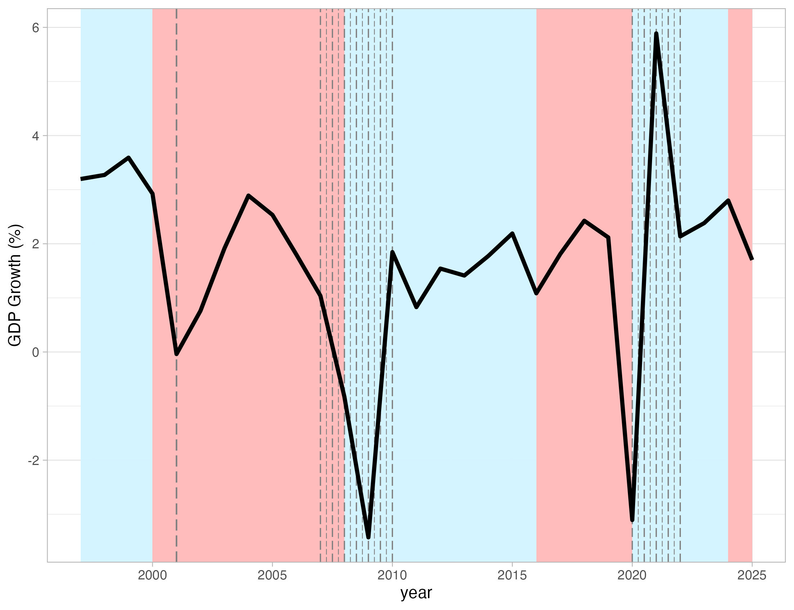
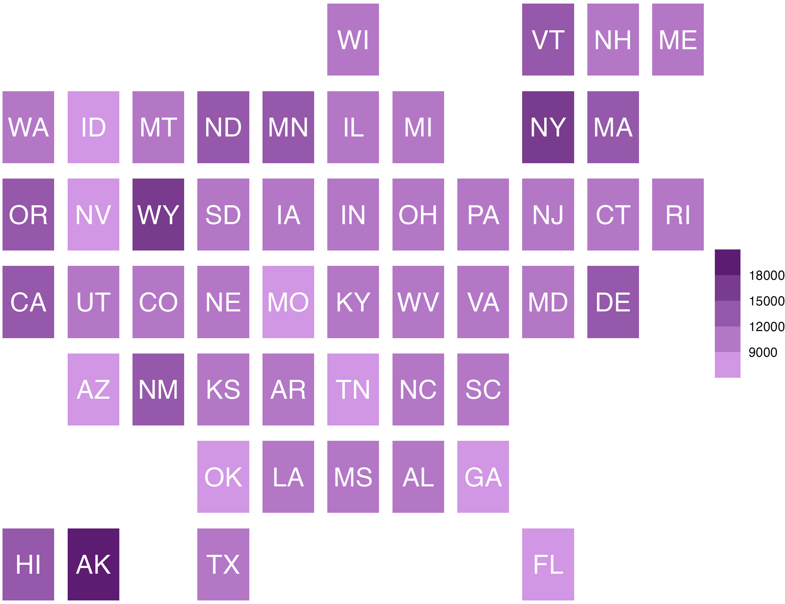
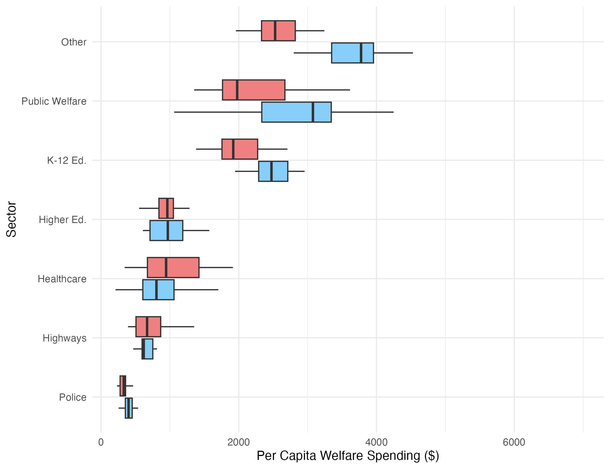

Show the code
# Load Libraries
library(tidycensus)
library(dplyr)
library(here)
library(janitor)
library(tidyverse)
library(tidyr)
library(plotly)
library(ggplot2)
library(scales)
library(geofacet)After the nail-biting months, prior to the 2024 presidential elections, where I spent (what felt like) every other moment glued to the polls, news, and social media, the results of 2024 elections flooded in through the aforementioned channels. While the votes were being called, the AP News United States Map went through a metamorphosis where insignificant dots, then counties, then states, bled red. I remember feeling detached - thinking “Did no one remember his previous 4 years?”
While news pundits and reporters, friends and family, tried making sense of the quantified sentiments of the American people - and important social justice issues were bought to the fore (racism, misogyny, homophobia, classism, etc.) - swathes of Trump supporters insisted “It’s the economy, stupid!”
For my final data visualization piece/art therapy substitute, for the EDS 240: Data Visualization and Communication course, I wanted to create an infographic that would highlight the absurdity of this claim.
Initially, I had wanted to visualize socio-economic characteristics of American states by 2024 party affiliation. Further research has shown that the social welfare aspects are better analyzed through the lenses of race, gender, and income status - rather then by voting party. Therefore, I narrowed my field of focus to finances of states as well as state welfare spending.

For the final visualization, I used R to create my plots and Canva to create the larger infographic. As I removed the backgrounds of my R plots, in order to create a more cohesive and professional look, using Canva, this impacted the axis titles, benchmarks, and line guides. Thus these details were re-added in post.
I used the following libraries to create the plots in R
# Load Libraries
library(tidycensus)
library(dplyr)
library(here)
library(janitor)
library(tidyverse)
library(tidyr)
library(plotly)
library(ggplot2)
library(scales)
library(geofacet)For my infographic, I used data from the following sources:
# Data used
pcap <- read_csv(here::here("data", "p_cap_clean2.csv"))
gdp <- read_csv(here::here("data","gdp2.csv"))
welfare <- read_csv(here::here("data", "welfare1.csv"))
welfare_state <- read_csv(here::here("data", "welfare_state1.csv"))Below is the preliminary code to clean your imported csv data:
# Create df with state names and abbreviations
state_mapping <- data.frame(
NAME = state.name,
Abbreviation = state.abb,
stringsAsFactors = FALSE
)
# Create new df 'join'
join <- state_mapping
# Create list of state abbreviations and voting affilliation
election <- c(
'CA' = 'D', 'OR' = 'D', 'CO' = 'D', 'NM' = 'D', 'MN' = 'D', 'IL' = 'D',
'VA' = 'D', 'DC' = 'D', 'MD' = 'D', 'ME' = 'D', 'NH' = 'D', 'VT' = 'D',
'NY' = 'D', 'MA' = 'D', 'CT' = 'D', 'NJ' = 'D', 'DE' = 'D', 'RI' = 'D',
'AL' = 'R', 'AK' = 'R', 'AZ' = 'R', 'AR' = 'R', 'FL' = 'R', 'GA' = 'R',
'HI' = 'D', 'ID' = 'R', 'IN' = 'R', 'IA' = 'R', 'KS' = 'R', 'KY' = 'R',
'LA' = 'R', 'MS' = 'R', 'MO' = 'R', 'MT' = 'R', 'NE' = 'R', 'NV' = 'R',
'NC' = 'R', 'ND' = 'R', 'OH' = 'R', 'OK' = 'R', 'OR' = 'R', 'PA' = 'R',
'SC' = 'R', 'SD' = 'R', 'TN' = 'R', 'TX' = 'R', 'UT' = 'R', 'WA' = 'D',
'WI' = 'R', 'WY' = 'R', 'MI' = 'R', 'WV' = 'R'
)
# Add voting affiliation to join df
join$election_status <- election[join$Abbreviation]
clean_join <- join %>%
clean_names()
# create palette to be used to signify voting party
election_palette <- c("D" = "lightskyblue","R" = "lightcoral")
# create dataframes for per capita balance (expenditures and reciepts) bargraphs
pcap_take_data <- pcap %>%
mutate(pcap_balance = as.numeric(gsub("[$,]", "", pcap_balance))) %>%
arrange(rank) %>%
slice_head(n = 10) %>%
left_join(select(clean_join, name, abbreviation, election_status), by="name") %>%
mutate(name = fct_reorder(.f = name, .x = pcap_balance))
pcap_give_data <- pcap %>%
mutate(pcap_balance = as.numeric(gsub("[$,]", "", pcap_balance))) %>%
arrange(rank) %>%
slice_tail(n = 10) %>%
left_join(select(clean_join, name, abbreviation, election_status), by="name") %>%
mutate(name = fct_reorder(.f = name, .x = -(pcap_balance)))
# Clean gdp df
gdp_clean <- gdp %>%
clean_names() %>%
rename(president_party = x4)
# Clean welfare df
welfare_clean <- welfare %>%
rename("name" = "United States .................................................................................") %>%
rename("welfare_spend" = "11,097")
welfare_clean <- welfare_clean[!grepl("^[.]+$", welfare_clean$name), ]
welfare_clean$name <- gsub("([A-Za-z ]+)[.]+.*", "\\1", welfare_clean$name)
welfare_clean_1 <- welfare_clean[-c(53, 8, 10, 15, 21, 29, 42, 47,1), ]
welfare_clean_1 <- welfare_clean_1 %>%
left_join(select(clean_join, name, abbreviation), by="name")
# Clean welfare_state (sector expenditures by state)df
welfare_state_clean <- welfare_state %>%
clean_names()
welfare_state_clean$name <- gsub("([A-Za-z ]+)[.]+.*", "\\1", welfare_state_clean$name)
welfare_state_clean <- welfare_state_clean[-c(51, 52, 53, 54, 55), ]
welfare_state_clean_1 <- welfare_state_clean %>%
left_join(select(clean_join, name, abbreviation), by="name")
welfare_state_clean_1 <- welfare_state_clean_1 %>%
rename("K-12 Ed." = "elementary_secondary_education") %>%
rename("Higher Ed." = "higher_education") %>%
rename("Public Welfare" = "public_welfare") %>%
rename("Healthcare" = "health_and_hospitals") %>%
rename("Highways" = "highways") %>%
rename("Police" = "police") %>%
rename("Other" = "other") %>%
pivot_longer(
cols = c("K-12 Ed.", "Higher Ed.", "Public Welfare",
"Healthcare", "Highways", "Police", "Other"),
names_to = "spend_sector",
values_to = "value"
) %>%
select(name, spend_sector, value, abbreviation) %>%
left_join(select(clean_join, name, election_status), by="name")
ordered_sectors <- c("K-12 Ed.", "Higher Ed.", "Healthcare", "Public Welfare", "Police", "Highways", "Other")
welfare_state_clean_1 <- welfare_state_clean_1 %>%
mutate(spend_sector = factor(spend_sector, levels = ordered_sectors)) 
Below is the code used to create the graph:
gdp_line_graph <- ggplot(data = gdp_clean, aes(x = year, y = gdp_growth)) +
theme_minimal()+
theme(
axis.title.x = element_blank() ) +
geom_rect(aes(xmin = 1997, xmax = 2000, ymin = -Inf, ymax = Inf), fill = 'lightskyblue', alpha=0.5) +
geom_rect(aes(xmin = 2000, xmax = 2008, ymin = -Inf, ymax = Inf), fill = 'lightcoral', alpha=0.5) +
geom_rect(aes(xmin = 2008, xmax = 2016, ymin = -Inf, ymax = Inf), fill = 'lightskyblue', alpha=0.5) +
geom_rect(aes(xmin = 2016, xmax = 2020, ymin = -Inf, ymax = Inf), fill = 'lightcoral', alpha=0.5) +
geom_rect(aes(xmin = 2020, xmax = 2024, ymin = -Inf, ymax = Inf), fill = 'lightskyblue', alpha=0.5) +
geom_rect(aes(xmin = 2024, xmax = 2025, ymin = -Inf, ymax = Inf), fill = 'lightcoral', alpha=0.5) +
geom_vline(xintercept = 2007, color = "firebrick", size = 0.4, linetype = "longdash") +
geom_vline(xintercept = 2007.25, color = "firebrick", size = 0.25, linetype = "longdash") +
geom_vline(xintercept = 2007.5, color = "firebrick", size = 0.4, linetype = "longdash") +
geom_vline(xintercept = 2007.75, color = "firebrick", size = 0.25, linetype = "longdash") +
geom_vline(xintercept = 2008, color = "firebrick", size = 0.4, linetype = "longdash") +
geom_vline(xintercept = 2008.25, color = "firebrick", size = 0.25, linetype = "longdash") +
geom_vline(xintercept = 2008.5, color = "firebrick", size = 0.4, linetype = "longdash") +
geom_vline(xintercept = 2008.75, color = "firebrick", size = 0.25, linetype = "longdash") +
geom_vline(xintercept = 2009, color = "firebrick", size = 0.4, linetype = "longdash") +
geom_vline(xintercept = 2009.25, color = "firebrick", size = 0.25, linetype = "longdash") +
geom_vline(xintercept = 2009.5, color = "firebrick", size = 0.4, linetype = "longdash") +
geom_vline(xintercept = 2009.75, color = "firebrick", size = 0.25, linetype = "longdash") +
geom_vline(xintercept = 2010, color = "firebrick", size = 0.4, linetype = "longdash") +
geom_vline(xintercept = 2001,
color = "firebrick", size = 0.5, linetype = "longdash")+
geom_line() +
geom_vline(xintercept = 2020, color = "firebrick", size = 0.4, linetype = "longdash") +
geom_vline(xintercept = 2020.25, color = "firebrick", size = 0.25, linetype = "longdash") +
geom_vline(xintercept = 2020.5, color = "firebrick", size = 0.4, linetype = "longdash") +
geom_vline(xintercept = 2020.75, color = "firebrick", size = 0.25, linetype = "longdash") +
geom_vline(xintercept = 2021, color = "firebrick", size = 0.4, linetype = "longdash") +
geom_vline(xintercept = 2021.25, color = "firebrick", size = 0.25, linetype = "longdash") +
geom_vline(xintercept = 2021.5, color = "firebrick", size = 0.4, linetype = "longdash") +
geom_vline(xintercept = 2021.75, color = "firebrick", size = 0.25, linetype = "longdash") +
geom_vline(xintercept = 2022, color = "firebrick", size = 0.4, linetype = "longdash") +
ylab("GDP Growth (%)")I wanted to create a visualization of annual GDP growth rate (%), highlighting the differences when either the Republican or Democratic party was in power. This chart allowed for that time comparison to be made - while creating a stark background contrast to represent the presidential party at the time. I utilised a light blue and light coral red to signify the presidential party of the eras - coherent with the rest of my visualizations. This was because these colours are representative of the parties and the average American viewer will have a preconceived significance as to what this colour represents within the context of this infographic. Finally, I used red dotted lines to mark significant events that might have had an impact on the economy, extrinsic to the presidency.

Below is the code used to create the graph:
welfare_plot <- ggplot(welfare_clean_1) +
geom_rect(aes(xmin = 0, xmax = 1, ymin = 0, ymax = 1, fill = welfare_spend)) +
scale_fill_binned(low = "#FFFFFF" , high = "#8100AC", n.breaks = 4, name = "") +
facet_geo(~name) +
theme_void() +
theme(
strip.text = element_blank(),
axis.title = element_blank()
) +
geom_text(aes(x = 0.5, y = 0.5, label = abbreviation),
size = 3.5,
color = "black")This tile visual was used to create a simple but effective “map” which could also hold per capita welfare spending data. I binned the scale for the spending data - in order to simplify the visual comparison (and because there were few states that were at the extreme of the high-low spending category - making a complex colour chart unnecessary in this instance.) I also used purple colours which I felt would stand out from the background - while still being overall cohesive to the piece. (Purple was used as it is the blend of red and blue, as this visualization doesn’t show 2024 political party.)

Below is the code used to create the graph:
welfare_state_spend_plot <- welfare_state_clean_1 %>%
ggplot(aes(x = spend_sector, y = value, fill = election_status)) +
geom_boxplot(outlier.shape = NA) +
scale_fill_manual(values = election_palette) +
theme_minimal() +
theme(
legend.position = "none"
) +
ylab("Per Capita Welfare Spending ($)") +
xlab("Sector")In order to add some nuance on where this welfare spending was being filtered to - I decided to add another visualization on this point. Thus, I added a plot containing a series of boxplots, on welfare spending by sector and 2024 presidential party affiliation. Due to the difference in the number of Democratic and Republican states, this felt like the best way to get the information across in an un-biased manner, while still representing all states across the country. The colours are cohesive to the previous plot, and are still visually pleasing in a way that navy and bright red would not be. I used Poppins (titles, axis, benchmarks) fonts for all visualizations. I felt that it was easily readable, eyecatching but not distracting, created clear seperations of the visualizations, and worked with the overall tone of the piece.
Below is the code used to create the graphs:
pcap_take_graph <- ggplot(data = pcap_take_data, aes(x = name, y = pcap_balance, fill = election_status)) +
scale_fill_manual(values = election_palette) +
geom_col() +
theme_light() +
coord_flip() +
theme(
axis.text.x = element_blank(),
axis.title = element_blank(),
legend.position = "none"
) +
geom_text(aes(label = scales::dollar(pcap_balance)), hjust = 1.2, color = "white")
pcap_give_graph <- ggplot(data = pcap_give_data, aes(x = name, y = pcap_balance, fill = election_status)) +
scale_fill_manual(values = election_palette) +
geom_col() +
theme_light() +
coord_flip() +
theme(
axis.text.x = element_blank(),
axis.title = element_blank(),
legend.position = "none"
) +
geom_text(aes(label = scales::dollar(pcap_balance)), hjust = 0, color = "white")Finally, I wanted to create a “winged” bar graph of per capita balance of payments of the top 10 “taking” and the top 10 “giving” states. The colour of the bars is by presidential party affiliation. The “giving” states are on the left wing and are represented by negative dollars (as the formula is amount used less amount given), thus if the amount given is greater than the amount spent the per capita balance of payments will be negative. The “taking” states are on the right wing. I do wonder if I should change the scale, to be more accurate to each other, as well as emphasize that the negative dollars mean that it provides more than it uses?
I touched upon some of the chosen design elements - but I’d like to describe a few more including:
Rockfeller Institute of Government. (n.d.). Balance of payments portal. Rockefeller Institute of Government. Retrieved March 14, 2025, from https://rockinst.org/issue-areas/fiscal-analysis/balance-of-payments-portal/
Tax Policy Center. (2023, August 24). State and local general expenditures per capita. Tax Policy Center. Retrieved March 14, 2025, from https://taxpolicycenter.org/statistics/state-and-local-general-expenditures-capita
World Bank. (2025, March 14). GDP growth (annual %) - United States. The World Bank. Retrieved from https://data.worldbank.org/indicator/NY.GDP.MKTP.KD.ZG?locations=US
@online{moraes2025,
author = {Moraes, Naomi},
title = {The {Financial} {States} of {America}},
date = {2025-03-14},
url = {https://nmoraescommit.github.io/posts/2025-03-14-data-vis-infographic/infographic.html},
langid = {en}
}